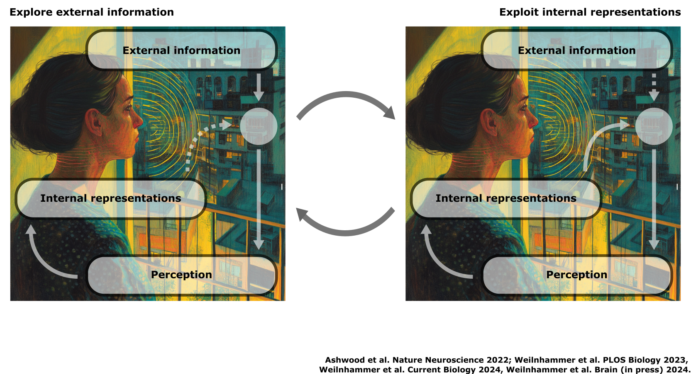
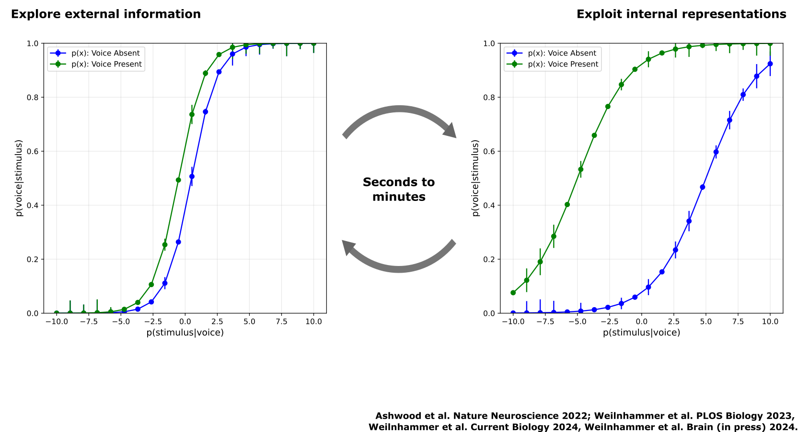
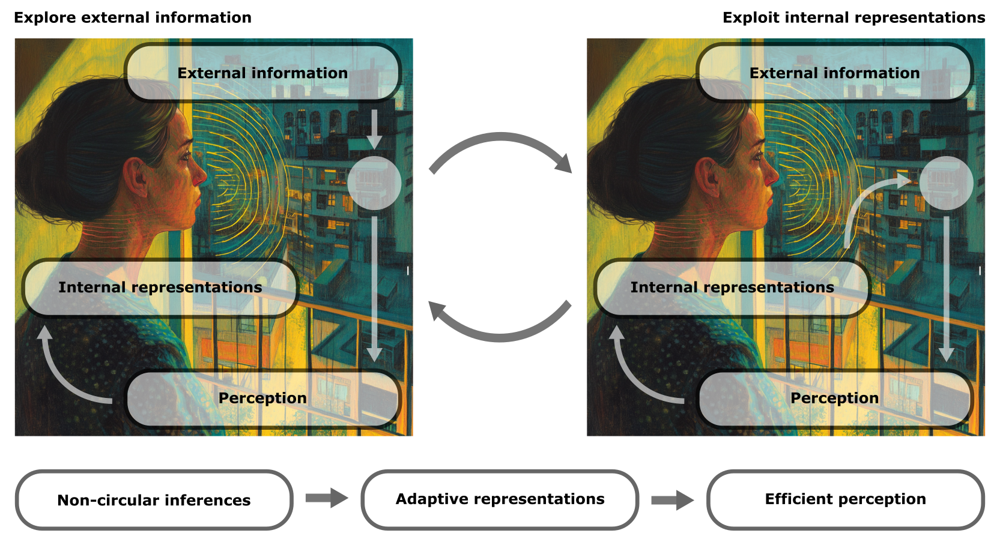
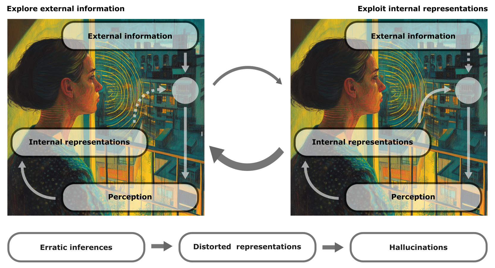
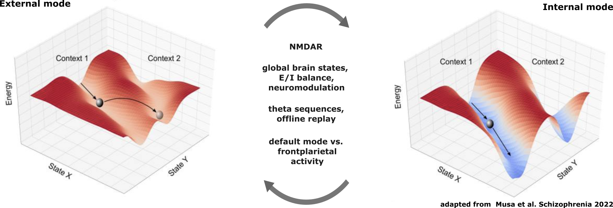
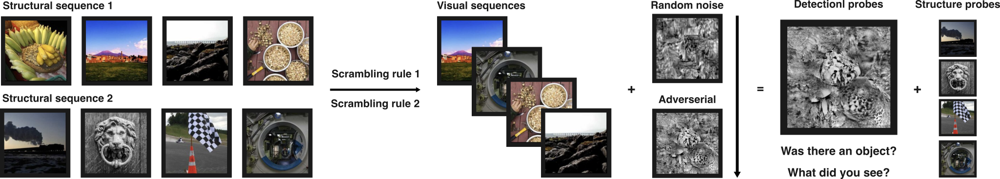
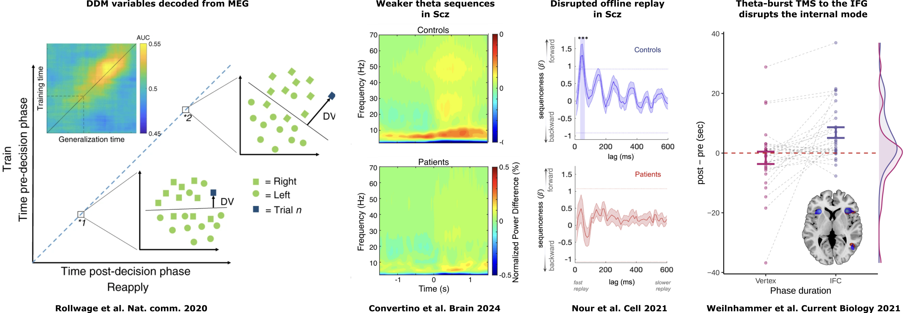

How do psychotic symptoms emerge, evolve, and resolve over time?
Veith Weilnhammer, MD
Helen Wills Neuroscience Institute, UC Berkeley
It started with strange noises through the wall, faint and hard to identify.
Over time, I could make out the voice of my neighbor.
At first, I only heard the voice in my apartment, but later it followed me to other places.
Hallucinations reflect dynamic failures of inference and generalization.
It started with strange noises through the wall, faint and hard to identify.
Over time, I could make out the voice of my neighbor.
At first, I only heard the voice in my apartment, but later it followed me to other places.
Why are hallucinations are transient and recurring?




Is there an imbalance between external and internal modes in Scz?
What is the effect of NMDAR hypofuncion on the balance between modes?
Are false alarms more frequent in the internal mode?
What are the functions and mechanisms of external and internal modes in perception, decision-making, learning, and spatial navigation?
Constructing stable internal representations from an ongoing stream of noisy data.
What are the functions and mechanisms of external and internal modes in perception, decision-making, learning, and spatial navigation?
Constructing stable internal representations from an ongoing stream of noisy data.

How do structural and perceptual inference interact to produce dynamic hallucinations that generalize across contexts?
Combination of structural and perceptual decision-making under uncertainty
How do structural and perceptual inference interact to produce dynamic hallucinations that generalize across contexts?
Combination of structural and perceptual decision-making under uncertainty

Predictions Behavior:
Predictions Imaging:

Weilnhammer, Fritsch, Chikermane, Eckert, Kathak, Stuke, Sterzer. An Active Role of Inferior Frontal Cortex in Conscious Experience. Current Biology 2021.
Weilnhammer, Stuke, Standvoß, Sterzer. Sensory processing in humans and mice fluctuates between external and internal modes. PLOS Biology 2023.
Weilnhammer, Rothkirch, Yilmaz, Fritsch, Ptasczynski, Reichenbach, Roediger, Corlett, Sterzer. N-Methyl-D-aspartate receptor hypofunction causes recurrent and transient failures of perceptual inference. Brain (in press) 2024.
Weilnhammer, Murai, Whitney. Dynamic predictive templates in perception. Current Biology 2024.